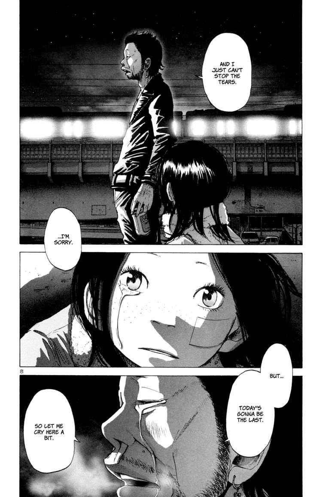
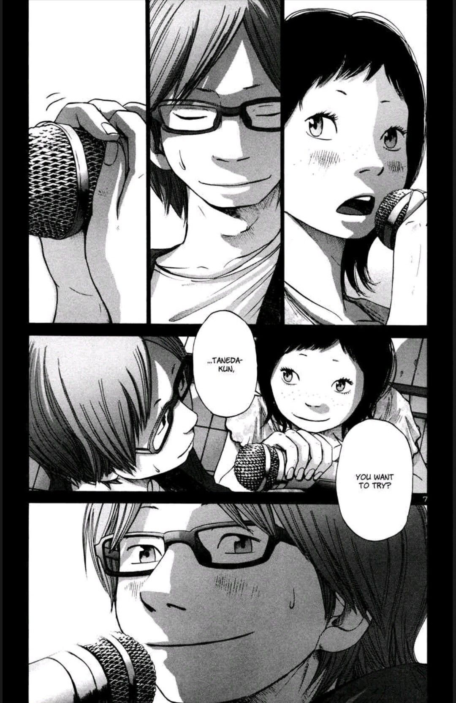
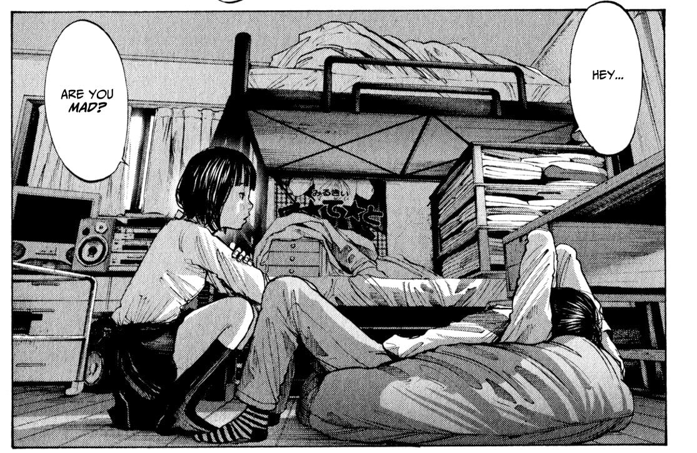

Cuando se publicó la primera obra de Inio Asano en Argentina por parte de Ivrea, su nombre no pasó
desapercibido entre el vasto
mercado del manga. Con el paso del tiempo y de sus obras, este joven mangaka se ha convertido en uno de los
mayores éxitos entre los lectores.
Obras de Inio Asano editadas en el país
Obras
Cantidad de tomos
Tamaño
Solanin
1
A5
Oyasumi PunPun
13
B6
La chica a la orilla del mar
1
B6 doble
Reiraku
1
A5
Nijigahara Holograph
1
B6 doble
La ciudad de la luz
1
B6
What a wonderful world
1
A5
Heroés
1
A5
Dead Dead Demon's Dededede Destruction
12
B6
Un poco del autor
Asano nació en Isioka, en la prefectura de Ibaraki, en el año 1980 y con 17 años ya debutó en la
editorial
Shogakukan realizando pequeños encargos. Cuatro años más tarde ganó el premio GX destinado a jóvenes
autores
y, poco después, publicó su primera obra de renombre, Un mundo maravilloso. Posteriormente,
publicó
Nijigahara Holograph, obra con la que consiguió cautivar al público y, tras dos trabajos
regulares,
en 2006
publicó una de sus obras maestras, Solanin. Desde entonces, su éxito ha sido imparable, siendo
descrito por
el periódico de mayor tirada en Japón como “una de las voces de su generación”.

Sus historias son una mezcla de realismo, surrealismo y ciertos elementos fantásticos. Centradas en
personajes, habitualmente jóvenes que buscan su sitio en la sociedad. Son historias con una fuerte carga
emocional, melancólicas, tristes y cínicas, pero siempre con alguna nota de esperanza.
Su estilo de dibujo puede definirse como realista, con unas ilustraciones soberbias, llenas de detalles.
Combina un diseño de personajes muy peculiares con fondos prácticamente fotorrealistas, creando un
estilo
realmente único.
Oyasumi punpun narra la historia de Punpun Punyama, un niño de once años que conoce a Aiko Tanaka, una
chica transferida de la que Punpun se enamorará perdidamente y el resto de la historia es el crecimiento
y aprendizaje personal del protagonista frente a la vida y al amor. No parece gran cosa al principio
pero cuando se vaya avanzando uno se dará cuenta de que las cosas no son precisamente normales en este
manga. Tardaría horas en expresar lo que significa este manga para mí. Esto fue algo que, en medida
incluso mayor a mi anime favorito: Neon genesis evangelion, leí y releí hasta el punto en el que llegaba
a formar parte de mí. Es la historia más larga de Inio Asano, la más rebuscada, así como la más
dramática y cruel y ante nada la más triste. Tiene una historia con narrativa veloz, un romance
expectacular, unos personajes carismáticos los que menos e incluso consiguió analizar temas
existencialistas junto con un montón de simbolismo.
La única pregunta que aparecía en mi cabeza era
¿puede existir algo tan maravilloso?.Puedo perdonar el fracaso de la madre de Aiko
cuando está la madre de Punpun, puedo perdonar los dos deux ex machina que hay en los capítulos 19 y 96
cuando me presentan capítulos tan extraordinarios como el capítulo del meteorito, el de los Punpuns
volando por el cielo o el capítulo de la navidad feliz, le perdono todos sus defectos porque están
Punpun, Aiko y Sachi en el manga, y considero a Punpun Onodera uno de los tres mejores protagonistas que
he visto en algo de entretenimiento, junto con Gatsu de Berserk y Walter White de Breaking bad.
Solanin es hasta el momento el único manga de bandas que me ha gustado, pero también entre las obras del
mismo tiene muchísimo para alabar. Solanin es un manga para reflexionar sobre el sentido de la vida, no
de una manera autoproyectiva como Oyasumi Punpun pero si de una manera más conclusiva y ordenada. Nos
cuenta la historia de Meiko, una joven que dimite en su trabajo en busca de algo que le satisfaga más, y
de eso va el manga: la búsqueda de la felicidad, pero se dará cuenta los problemas del inconformismo,
cómo el buscar algo mejor puede traer cosas peores. Es el manga más reflexivo de todas las obras de
Asano, y no contento con eso también tiene su ración de dramatismo y comedia perfectamente balanceados.
Pero lo que me sorprendió es que fuese un manga de bandas que me gustó: yo soy una persona que ha estado
siguiendo a muchas bandas y cada vez que
veía cosas como Beck o K-on les acababa teniendo asco por la cantidad de mentiras y «cosas
que no pasan
en una banda» que veía o leía, así que fue genial para mí encontrar esta obra.

Una recomendacion personal que les puedo hacer es leer esta obra con la canción original de su live
action de fondo:
La historia más compleja de este autor, no la más rebuscada pero sí la más difícil de entender. Cada
capítulo es un caso de narración equisciente, es decir, en cada capítulo nos cuenta los hechos desde la
perspectiva de un personaje diferente, y en un momento diferente. La historia empieza una chica que es
empujada a un pozo por algunos de sus compañeros de clase porque había rumores de que tenía una
maldición y tras eso la chica queda en coma. Después, sucesos tenebrosos originados por el interior de
cada uno de los personajes empezarán a tener lugar en las vidas tanto presentes como futuras de las
alumnos y profesores de la clase a la que pertenecía la chica que fue arrojada al pozo. Es además el
único manga de Inio Asano con toques de terror, aunque se concentre especialmente en las psiques de cada
uno de sus personajes.
Lo diré sin rodeos: La chica a la orilla del mar o Umibe no onnanoko es manga erótico. Ojo, no hentai,
que son diferentes, este manga habla sobre Isobe y Sato, dos adolescentes que deciden
mantener relaciones con el propósito de lamerse las heridas, pero como suele pasar en estos casos las
cosas se irán de las manos hasta que los sentimientos empiecen a surgir. Lo que realmente me encanta de
este
manga que lo hace estar para mí mejor que Solanin no es otra cosa que su mensaje, al más puro estilo
Tengen toppa gurren lagann o Tatami galaxi, Umibe no onnanoko tiene un mensaje o conclusión que repite
constantemente, y el mensaje es un poco simple incluso hace gracia con el título pero está llevado con
una inteligencia que me encanta. Si no fuera poco la relación de los personajes principales es
excelentes, así como sus evoluciones paralelas, aunque los personajes secundarios sufren unos cuantos
antibajos Kashima bien, Misaki mal. Si no soportas las escenas de sexo explícito aléjate pero si no les
das mucha importancia este manga es altamente recomendado.

Top personal de Inio Asano
Si tuviese que hacer un mini top con las mejores obras que leí de Inio Asano sería el siguiente: